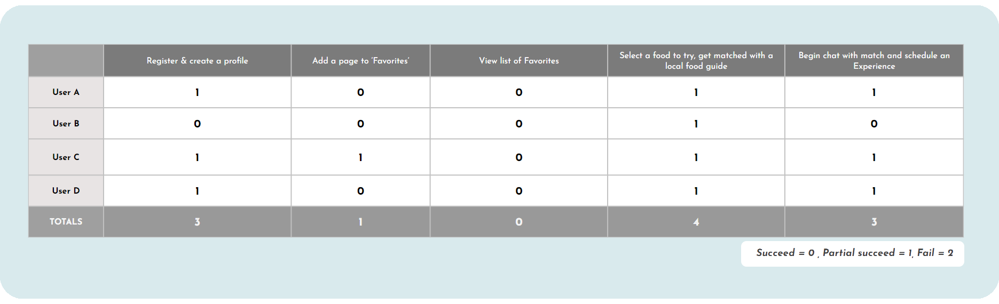

Travelers are underwhelmed by the lack of connectedness and authenticity that come with standard tourist destinations and the ways they might represent places and people.
THE SOLUTION
Mappetizer is a travel food app that provides compelling user-generated content and allows for users to explore & match with local residents to share meals with, breaking cultural barriers through the shared language of food.
I conducted 5 user interviews to understand more about what a millennial-aged working professional is looking for in their travel experience, how they prefer to plan their travels, and their biggest pain points & frustrations they have surrounding travel.
I supplemented these interviews by gathering survey responses from 25 participants.
By combining interview and survey methodologies in our research, I was able to utilize both qualitative and quantitative data points to help me learn more about our users.
INTERVIEW FINDINGS
“We’re obsessed with food when it comes to traveling, so sometimes I have certain missions that revolve around a specific dish that I really want to have a lot of.”
“I think what I like about traveling, especially internationally, is just getting to, you know, immerse yourself in a completely different culture [...] trying new foods, hearing new languages [...] navigating the new location and place, and meeting new people. Just a completely different environment from your home base.”
“I really love that feeling that I get when [...] you get new eyes and you’re in a place that you haven’t been before, or a place that you just really love and you’re able to be fully present.”
“It’s most exciting if I’m like, holy sh*t, I’m in a place where I can literally just grab a mango from a tree and I’m eating a fresh mango, and I don’t have to go to the grocery store -- I can just grab it off and have it right there.”
SURVEY DATA
72% of respondents indicated that food was a top priority when planning for a trip.
73% of respondents reportedly engage in cultural & gastronomic activities the most when traveling, followed by nightlife & socializing.
Our participants consider themselves backpack/budget & active adventure travelers.
The majority of survey respondents indicated that being with someone who knows the lay of the land & having mobile data/wi-fi access at all times would give them a sense of safety & security the most when traveling.
All respondents were moderately to extremely open to interacting with locals when they traveled.
AFFINITY DIAGRAM
EMPATHY MAP
USER PERSONA
Building off our established research findings and empathy map, I created the following persona.
III. DEFINITION & IDEATION
USER INSIGHT STATEMENT
Lauren needs to find a safe and secure way to break down communication barriers and meaningfully connect with local residents when she travels, so that she can live travel stories that transcend a superficially conventional tourist experience.
Doing so will allow her to broaden her personal horizons, move her to establish empathetic connections with people who are different from her, and help to dissolve ethnocentric views of the world around her.
PROBLEM STATEMENT
Travelers can be skeptical and wary of falling prey to inauthentic and cliché tourist traps that superficially fail to represent the depth and reality of a culture & its people.
These experiences, while not necessarily outwardly fraudulent or deceptive, leave travelers disappointed and wanting more for their time and money.
Our users are motivated by curiosity, empathy, and respect for different peoples. They seek to personally connect and make meaningfully real memories & relationships with the places they travel to.
How might we be able to bridge the gap between “tourist” and “local” so that travel experiences might feel less voyeuristic and more immersive, enriching, and representational when it comes to a culture and its community?
VALUE PROPOSITION
My organization, Mappetizer, is developing ways to help travelers learn about local food culture and share the experience of eating meals & new foods with native residents to help them live, learn, and explore from the eyes of the local culture and community.
We believe that food is a universal love language and by breaking bread & sharing a table with others, our users will forge resonating and deeply invaluable connections that will last with them long after they have returned home.
We are different because we aim to break down cultural barriers with mutual respect for all peoples and ways of life. We are motivated by curiosity (and our appetites)!
Identify usability obstacles of Mappetizer mobile in-app experience, from onboarding & creating a profile, selecting a food choice, and finding & connecting with a match
TARGET USERS
Millenial aged (22-38) people who use smartphones whilst traveling.
USER TASKS & SCENARIOS
Register and create a profile.
Add a page to "Favorites"
View my list of Favorites
Get matched with local
Begin chat with match
TESTING FINDINGS (KEY QUOTES)
“This seems pretty standard, like registering for anything else”
“Maybe because I don’t see the map, would make more sense if I could see it but it’s not super obvious what it is at first”
“Regions that I’m interested in… does this only apply for what I’m looking to do within the app, or in general?”
“I would definitely need to hit ‘tell more more’ for this” (re: ‘background check’ and profile verification verbiage)
“This would make more sense if it looked more like any other chat - like it opened a text box that I could tap in and text, instead of hitting reply and having it pop up”
TESTING RESULTS

TESTING LEARNINGS & TAKEAWAYS
Ensure that prototype has secondary flows/sequences included at each screen - users will maneuver in a non-linear fashion and having multiple routes/gateways included in all screens is critical to maintain the impression of how the app will look and function in real life
Over-communicate what something is meant to do and why it is there: for the shortcut navigation menu, include text + icons instead of just icons so it is clear where everything is laid out and what you’re meant to do with a specific icon
Don’t include a feature just to include it because you’ve seen something similar on other apps - ensure that everything has an intended purpose & function
When prompted to confirm their locations, users were confused by “map”
I learned each of these design thinking stage’s inherent value and how one is inextricably connected with the others when it comes to being able to prop up the final result (that is, if there ever really is a culminating end result, as I’ve learned that there is always room for further improvement).
Moving forward, I would like to engage in further rounds of testing, iterating and critique in order to come closer and fully flesh out a solution that filled in the needs established in our initial problem. If my app were ever to be released into the real world, I would also like to establish quantifiable metrics and KPIs that would define and evaluate what successful performance looks like in order to substantiate & drive each design decision within it.
{kind=link}
{kind=link}
{kind=link}
{kind=link}
{kind=link}
{kind=link}

{kind=link}
{kind=link}
{kind=link}
{kind=link}
{kind=link}
{kind=link}
{kind=link}


{kind=link}